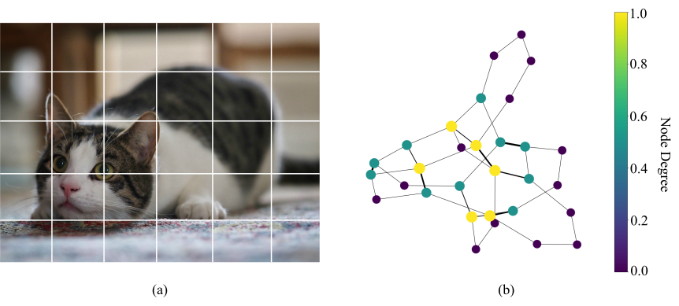
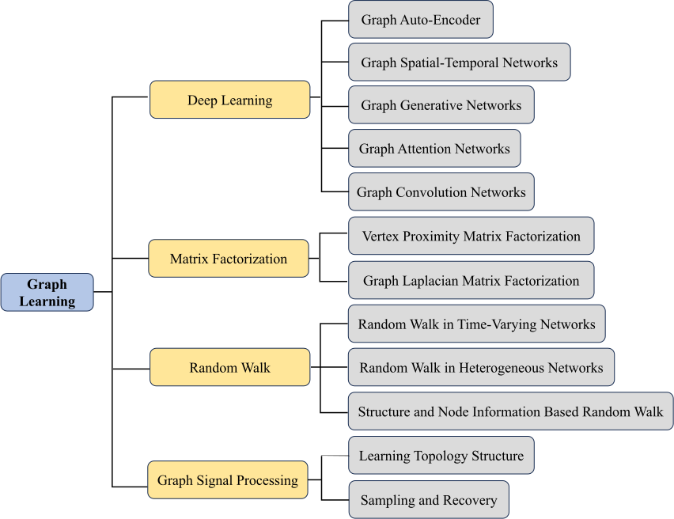

Introduction
Graph learning has emerged as a pivotal artificial intelligence (AI) solution, driven by the increasing recognition of graph structures in modeling complex relationships within data [1, 2, 3]. Graphs, which consist of nodes and edges, are inherently suited to represent a diverse range of complex systems such as social systems [4, 5], knowledge graphs [6, 7], academic networks [8, 9], urban dynamics [10, 11], and biological networks [12, 13]. Unlike other Euclidean data such as images and text, graphs are typically non-Euclidean data, which exhibit irregular structures, such as varying node degrees and edge weights (see Fig. 1.1).
Graph learning techniques are specifically designed to leverage the structural information embedded in graphs. Besides, graph learning is not limited to providing solutions for graph-structured data, but also Euclidean data [14]. With nodes and relations extracted from Euclidean data, the graph structure can be first constructed and then be represented by graph learning solutions. For example, image segmentation and object detection can be implemented with graph learning by constructing a connection graph between pixels [15, 14]. Moreover, graph learning can be applied to disease prediction by constructing a similarity graph of symptoms between patients. The efficiency of analyzing graphs is closely tied to how they are represented.

Generally speaking, graph learning refers to machine learning on graphs, and its target is to extract the desired features of a graph. Most graph learning approaches utilize deep learning techniques to encode and represent graph data as vectors in a continuous space. This representation allows graphs to be seamlessly integrated into downstream tasks, making graph learning a highly effective tool for various AI applications.
As illustrated in Figure 1.2, existing graph learning methods fall roughly into the following four categories [1]: methods based on deep learning, matrix factorization, random walk, and graph signal processing (GSP). Deep learning-based methods include, for example, graph convolutional networks (GCNs), graph attention networks (GATs), graph auto-encoders (GAEs), graph generative networks, and graph spatial-temporal networks [16, 17, 18, 19]. Matrix factorization techniques can be categorized into two main types: graph Laplacian matrix factorization and vertex proximity matrix factorization [20, 21, 22, 23]. Random walk-based methods include, for example, structure-based random walks, random walks that incorporate both structure and node information, random walks in heterogeneous networks, and those in time-varying networks [24, 25, 26, 27]. Finally, GSP focuses on the sampling and recovery of graphs, as well as inferring the topological structure of data [28, 29, 30, 31]. It is worth noting that graph learning [1] and graph neural networks (GNNs) [32, 33] are not exactly the same thing, with GNNs being a popular type of graph learning approaches.

To better illustrate diverse graph learning approaches, we start with a classic task: community detection. In social networks, community detection aims to identify groups of users who interact more frequently with each other than with those outside their group. We frame the community detection task using the following graph learning methods.
Deep learning based methods: Consider a social network represented as a graph \(G = (V, E)\), where \(V\) is the set of nodes (vertices) and \(E\) is the set of edges (links). Each edge \((u, v)\) can be weighted to reflect the frequency or strength of interaction between users \(u\) and \(v\). GNNs further extend these concepts through a message-passing paradigm [34]. In a GNN, each node iteratively aggregates information from its neighbors. This framework allows the model to learn representations that are sensitive to the topology of the graph. Formally, in layer \(l\), the representation \(h_v^{(l)}\) for the node \(v\) is updated as:
\[h_v^{(l)} = \sigma\left( W^{(l)} h_v^{(l-1)} + \sum_{u \in N(v)} \frac{1}{c_{uv}} W^{(l)} h_u^{(l-1)} \right),\](1.1)where \(N(v)\) represents the neighbors of \(v\), \(W^{(l)}\) represents learnable weights, and \(c_{uv}\) is the normalization factor. This iterative process enables the model to capture intricate community structures by considering multi-hop neighbor interactions.
GATs adaptively assign importance to neighboring nodes, unlike GNNs, which treat all connections with equal weight [35]. To improve the model’s stability and expressiveness, GAT often employs a multi-head attention mechanism. For each head \(k\), different weight matrices and attention vectors are used to calculate distinct attention coefficients and new node characteristics. The representation \(h_v^{new}\) for the node \(v\) is updated as:
\[h_v^{new}= \sigma \left( \frac{1}{K} \sum_{k=1}^K \sum_{u\in N(v)} \alpha_{uv}^k h_u^{’} \right),\](1.2)where \(N(v)\) represents the neighbors of \(v\), \(K\) represents the number of heads, \(\alpha_{uv}^k\) is the normalized attention coefficients, and \(h_u^{’}\) is the original feature vector. This iterative process allows the model to focus on the most informative connections, thereby enhancing its performance.
GAEs contain encoders and decoders. In GAEs, GNNs are employed as encoders to embed network vertices into low-dimensional vectors, and decoders convert these vectors into reconstructed graph data. Specific auto-encoders for graphs are designed by combining either GCN with Generative Adversarial Network (GAN) or Long Short-Term Memory (LSTM) with GAN. GAEs can learn both topology structure and content features [36, 37]. The loss function of GAEs is the mean squared error loss represented as:
\[\mathcal{L} = \frac{1}{N^2} \sum_{u,v=1}^N {(A_{uv}-\hat{A}_{uv})}^2,\](1.3)where \(N\) is the number of nodes, \(A_{uv}\) is the adjacency matrix, and \(\hat{A}_{uv}\) is the reconstructed adjacency matrix. To enhance the robustness of graph embeddings, the Adversarially Regularized Variational Graph Autoencoder (ARVGA) introduces an adversarial training process [38].
In reality, community structures within graphs are often incomplete. To address this, graph generative networks have been developed to generate graphs based on observed data. One category of graph generative networks considers the generation process as the formation of vertices and edges, and another category of them is to employ generative adversarial training.
Social networks evolve over time, with each vertex’s attributes changing dynamically. Graph spatial-temporal networks are designed to capture both spatial and temporal dependencies within graphs. Recent studies [39] have integrated GCNs with RNNs, CNNs, or LSTMs to effectively model the spatial structures and temporal evolution of information in networks. RNN effectively captures temporal information to model the dependency of node features over time [40]. LSTM is a variant of RNN to address the vanishing or exploding gradient problems encountered by the traditional RNNs when processing long sequence data [41].
Matrix factorization based methods: Matrix factorization techniques utilize spectral graph theory to examine community structures within graphs [22]. A key tool in this analysis is the Laplacian matrix \(L\) , defined as \(L = D - A\) , where \(D\) represents the degree matrix and \(A\) is the adjacency matrix. The eigenvalues and eigenvectors of \(L\) offer valuable insights into the graph’s connectivity. In spectral clustering, the eigenvectors associated with the smallest eigenvalues are particularly informative, as they can reveal the underlying community structure.
In addition to the generalized eigenvalue problem, another matrix factorization approach is the vertex proximity matrix factorization. This method emphasizes the direct similarities or relationships between nodes, capturing their immediate connections and interactions. Unlike the Laplacian matrix, which primarily reflects the structural information of nodes, vertex proximity focuses on the relational aspects. Vertex proximity can be approximated in a low dimensional space, and the objective of preserving vertex proximity is to minimize the error as follows:
\[min_{U,V} \lVert A-UV^T \rVert _F^2,\](1.4)where \(U\) and \(V\) are embeddings in a low dimensional space, \(T\) refers to transpose and \(F\) represents norm.Random walks based methods: Random walks play a crucial role in understanding the flow of information across the graph [27]. Random walk-based methods, which are classified as structure- and node information-based random walk methods, utilize random walks to generate node embeddings to capture local and global structures. Algorithms such as DeepWalk [42] and Node2Vec [43] work in alignment with such techniques. By optimizing a skip-gram model over these walks, nodes that frequently appear together in walks are embedded closely in the vector space, allowing for effective clustering based on proximity in the embedding space. These structure-based random-walk methods leverage structural information in networks for community detection.
In addition to network topology, content or label of vertex also improves the accuracy of representation, eventually guiding the random walk process. Structure and node information-based random walks methods regard vertex attribute information as supplementary information. For example, TADW [24] and MMDW [44] are algorithms based on DeepWalk, leveraging text and labeling information of vertices to enhance the performance, respectively. Thus, the transition probabilities of moving from one node to another are adjusted based on both the structural properties of networks and the attributes of vertex.
Random walk-based approaches also benefit heterogeneous social networks [45], as these networks often have various types of nodes and relations. Compared to meta path-based methods that require prior knowledge for optimal meta path selection, random walk approaches use jump and stay strategies to overcome biases [46, 47, 48]. Especially, when encountering different types of nodes and relations, random walk methods not only consider immediate neighbors but also capture the global structure of the network. This comprehensive exploration enhances the understanding of interconnections among nodes.
Networks are dynamic entities, with new vertices and relationships emerging over time, while existing ones may become obsolete. Effectively capturing these temporal behaviors is crucial for comprehensive network analysis. Random walk-based methods have proven instrumental in this context, as they traverse time-series paths in dynamic networks, thus encapsulating essential temporal characteristics [49, 50].
Graph signal processing based methods: GSP provides a new perspective of the spectral analysis of graphs [51]. GSP usually defines graph signal models with adjacency matrices \(A\) (or Laplacian matrices \(L\)) as shifts [29, 52]. Taking adjacency matrix-based GSP as an example, the eigenvalue decomposition of the shift \(A\) is defined as \(A=V\Lambda V^{-1}\), where \(V\) is the matrix of eigenvectors and \(\Lambda\) is a diagonal matrix of eigenvalues. Eigenvectors corresponding to larger eigenvalues can be used to construct low-frequency filters to capture fundamental characteristics, and eigenvectors associated with smaller eigenvalues can be used to capture the variation between neighbor nodes [53].
Sampling and recovery are another direction in GSP. The sampling problem can be defined as reconstructing signals from samples on a subset of vertices, and the signals in it are usually limited by band [30]. The reconstruction task on graphs can also be interpreted as a data interpolation problem. Least squares reconstruction and smoothness technique are available methods in practice. They define a generative model for signal recovery by Gaussian random field (GRF) and a covariance matrix on graphs. Reconstruction of graph signals can be seen as the maximum posterior inference of GRF with low-rank approximation [54].
Inferring the topology of a graph from data involves estimating the graph’s structure, often represented by its Laplacian matrix, to identify missing links between entities. Typically, the graphs under consideration exhibit properties of sparsity and smoothness. In the context of GSP, smooth signals are predominantly composed of low-frequency components. When such signals are subjected to a graph shift operator, the resulting output tends to emphasize these low-frequency components, effectively filtering out higher-frequency variations.
The community detection task can be framed as a supervised or unsupervised learning problem, depending on the availability of labeled data. Loss functions such as cross-entropy for classification tasks or contrastive loss for embedding tasks guide the optimization process, leveraging techniques like the stochastic gradient descent. By integrating theoretical concepts from graph theory, statistical learning, and neural network architectures, graph learning provides robust methodologies for community detection in social networks. This synthesis of theory and application not only enhances our understanding of user interactions but also informs strategic decisions in marketing and social engagement.
Graph learning offers significant advantages across various domains and thus shows great potential. By effectively modeling intricate relationships among entities, graph learning captures the nuances of interactions that previous methods often overlook. For example, in fields such as social networks, graph learning enhances community detection, enabling the identification of tightly-knit user groups based on interaction patterns. In addition, it facilitates recommendations by analyzing user behavior and suggesting connections that are likely to be meaningful. This capability is particularly valuable in mining implicit relations from explicit interactions [55]. In the realm of biology, graph learning plays a critical role in drug discovery by analyzing protein-protein interaction networks, allowing scientists to uncover potential therapeutic targets and understand the underlying biological processes. Furthermore, the adaptability of graph learning (such as GNNs) makes it possible to learn rich representations of entities while considering their local and global contexts. The iterative process not only enhances the model’s understanding of relationships but also improves its robustness in tasks like node classification and link prediction [56, 57, 58]. As the research advances to improve scalability and efficiency, the potential for graph learning to drive insights and innovation across diverse industries becomes increasingly promising. Techniques that enable the processing of large-scale graphs have made it feasible to apply graph learning to real-world problems, from fraud detection in finance to route optimization in transportation. Moreover, the integration of graph learning with other technologies, such as natural language processing (NLP) and computer vision, opens new avenues for developing comprehensive models that leverage both relational and contextual information [59, 60, 61, 62, 63, 64, 65].
Graph learning has advanced significantly in recent years, yet several critical challenges remain. For instance, scalability remains a primary concern, as real-world graphs, like social networks or biological systems, often contain billions of nodes and edges, straining computational resources and necessitating efficient algorithms for processing large-scale data [66]. Dynamic and temporal graphs [67], which evolve over time, introduce complexity in modeling time-dependent relationships and maintaining real-time updates, critical for applications like financial fraud detection. Multimodal graphs, integrating diverse data types (e.g., text, images, and numerical features), require robust methods to align and fuse heterogeneous information effectively [68]. In parallel, the growing influence of generative AI opens new opportunities and risks for graph learning [69], particularly in generating realistic graphs or augmenting sparse data, but ensuring validity and fidelity remains difficult. Explainability is another pressing issue [70, 71], as the black-box nature of models like GNNs obscures decision-making, limiting trust in high-stakes domains like healthcare. This ties closely with responsible AI concerns, including, e.g., fairness, robustness, and privacy. For instance, bias in graph structures or node attributes can propagate through models [72], while sensitive relational data demands privacy-preserving graph learning techniques. Addressing these challenges is essential for deploying graph learning systems that are not only effective but also trustworthy and socially responsible. Furthermore, we offer a summary table as shown in Table 1.1. It summarizes each branch, application domains, and representative methods.
This survey provides a comprehensive overview of recent advances in graph learning that tackle the key challenges outlined above. Specifically, we cover scalable graph learning (Section 2), temporal graph learning (Section 3), multimodal graph learning (Section 4), generative graph learning (Section 5), explainable graph learning (Section 6), and responsible graph learning (Section 7). Furthermore, we highlight several emerging topics that are gaining increasing attention in the research community (Section 8).
| Taxonomy | Application Domains | Representative methods |
|---|---|---|
| Scalable / Graph Learning | Social Network Analysis, / Recommendation Systems | Graph Data Summarization |
| Computational Sampling Methods | ||
| Distributed Graph Learning | ||
| Temporal / Graph Learning | Real-time Traffic Forecasting, / Epidemic Spread Prediction | Spatiotemporal Graph Learning |
| Dynamic Graph Learning | ||
| Multimodal / Graph Learning | Multimedia Content Analysis | Graph-driven Multimodal Learning |
| Learning on Multimodal Graphs | ||
| Generative / Graph Learning | Drug Discovery, / Molecular Material Design | Unconditional Generative Graph Learning |
| Conditional Generative Graph Learning | ||
| Explainable / Graph Learning | Medical Diagnostics, / Financial Risk Control | Post-hoc Explanation for Graph Learning |
| Self-explanatory Graph Learning | ||
| Responsible / Graph Learning | Credit Analysis, / Judicial Risk Assessment, / Public Policy Formulation | Privacy-Preserving Graph Learning |
| Fairness in Graph Learning |